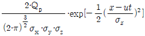
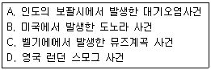
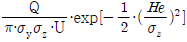
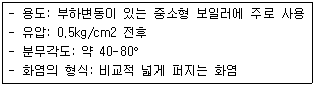
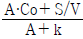
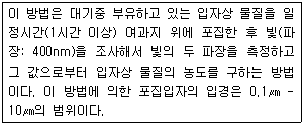
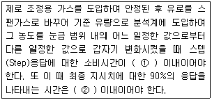
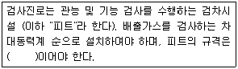

대기환경기사 (2011-03-20 기출문제)
1과목: 대기오염 개론
1. 최대혼합깊이(MMD)에 관한 설명으로 옳지 않은 것은?
- 일반적으로 대단히 안정된 대기에서의 MMD는 불안정한 대기에서보다 MMD가 작다
- 실제 측정 시 MMD는 지상에서 수 km 상공까지의 실제공기의 온도종단도로 작성하여 결정된다.
- 일반적으로 MMD가 높은 날은 대기오염이 심하고 낮은 날에는 대기오염이 적음을 나타낸다.
- 계절적으로 MMD는 이른 여름에 최대가 되고, 겨울에 최소가 된다.
(정답률: 74%)

2. 대기오염물질이 인체에 미치는 영향으로 가장 거리가 먼 것은?
- 금속수은은 수은증기를 흡입하면 대부분 흡수되나 경구 섭취시에는 소구를 형성하므로 위장관으로는 잘 흡수되지 않는다.
- 석면폐증의 용혈작용은 석면내의 Mn에 의해서 발생되며 적혈구의 급격한 감소증상이다.
- 베릴륨 화합물은 흡입, 섭취 혹은 피부접촉으로는 거의 흡수되지 않는다.
- 염소, 포스겐 및 질소산화물 등의 상기도 자극 증상은 경미한 반면, 수시간 경과 후 오히려 폐포를 포함한 하기도 자극증상은 현저하게 나타나는 편이다.
(정답률: 62%)
3. 표준상태에서 SO2 농도가 1.57g/m3 이라면 몇 ppm 인가?
- 250
- 350
- 450
- 550
(정답률: 58%)
4. 풍속이 2m/sec인 어느 날 저유소의 탱크가 폭발하여 벤젠 100kg이 순식간에 배출되었다. 사고 후 저유소에서 풍하방향으로 600m 떨어진 지점의 지면에 연기의 중심부가 도달하는데 소요되는 시간은 몇 분인가? (단, Instantaneous puff equation C =

이용)- 3min
- 5min
- 10min
- 20min
(정답률: 55%)
5. 다음 중 포름알데히드(HCHO) 배출관련 업종으로 가장 거리가 먼 것은?
- 피혁제조공업
- 합성수지 공업
- 암모니아제조공업
- 포르말린 제조공업
(정답률: 68%)
6. 지상에서부터 600m 까지의 평균기온감율은 0.88℃/100m 이다. 100m 고도에서의 기온이 14℃라면 300m 에서의 기온은?
- 12.2℃
- 18.6℃
- 21.5℃
- 30.9℃
(정답률: 70%)
7. 온실효과 및 지구 온난화에 관한 설명으로 가장 적합한 것은?
- 지구온난화지수(GWP)는 SF6 가 HFCs 에 비해 크다.
- 대기의 온실효과는 실제 온실에서의 보온작용과 같은 원리이다.
- 온실효과에 대한 기여도는 N2O ＞ CFC 11 & 12 이다.
- 북반구에서의 계절별 CO2 농도경향은 봄·여름이 가을·겨울철보다 높은 편이다.
(정답률: 72%)
8. 다음 중 다환 방향족 탄화수소(Polycyclic Aromatic Hydrocarbons, PAH)에 관한 설명으로 가장 거리가 먼 것은?
- 석탄, 기름, 가스, 쓰레기, 각종 유기물질의 불완전 연소가 일어나는 동안에 형성된 화학물질 그룹이다.
- 대부분 공기역학적 직경이 2.5㎛ 미만인 입자상 물질이다.
- 대부분 PAH는 물에 잘 용해되며, 산성비의 주요원인물질로 작용한다.
- 고리 형태를 갖고 있는 방향족 탄화수소로서 미량으로도 암 및 돌연변이를 일으킬 수 있다.
(정답률: 78%)
9. 질소산화물에 관한 설명으로 가장 거리가 먼 것은?
- N2O는 대류권에서는 온실가스로 알려져 있으며 성층권에서는 오존층 파괴물질로 알려져 있다.
- 성층권에서는 N2O가 오존과 반응하여 NO를 생성한다.
- 대기중에서의 체류시간은 NO와 NO2가 2-5일 정도로 추정된다.
- 연소실 온도가 낮을 때는 높을 때보다 많은 NOx가 배출된다.
(정답률: 56%)
10. Down Wash 현상에 관한 설명은?
- 원십력 집진장치에서 처리가스량의 5-10% 정도를 흡인하여 줌으로써 유효원심력을 증대시키는 방법이다.
- 굴뚝의 높이가 건물보다 높을 경우 건물 뒤편에 공동현상이 생기고 이 공동에 대기오염물질의 농도가 낮아지는 현상을 말한다.
- 해가 뜬 후 지표면이 가열되어 대기가 지면으로부터 열을 받아 지표면 부근부터 역전층이 해소되는 현상을 말한다.
- 오염물질의 토출속도에 비해 굴뚝 높이에서의 풍속이 크면 연기가 굴뚝 아래로 오염물질이 흩날리어 굴뚝 밑부분에 오염물질의 농도가 높아지는 현상을 말한다.
(정답률: 72%)
11. 스테판-볼쯔만의 법칙에 의하면 표면온도가 1500K에서 2000K가 되었다면, 흑체에서 복사되는 에너지는 몇 배가 되는가?
- 1.33배
- 1.78배
- 2.37배
- 3.16배
(정답률: 64%)
12. 다음 중 유효굴뚝높이(Effective Stack Height)를 상승시키는 방법으로 가장 적합한 것은?
- 배출가스의 토출속도를 줄인다.
- 배출가스의 온도를 높인다.
- 굴뚝 배출구의 직경을 확대한다.
- 배출가스의 양을 감소시킨다.
(정답률: 67%)
13. 다음 중 대기오염물질의 재산에 대한 피해로 가장 거리가 먼 것은?
- 납성분을 함유한 주택용 도료는 황화수소(H2S)와 반응하면 쉽게 황색(Pb2SO4)으로 변한다.
- 양모, 면, 나일론 등의 각종 섬유는 황산화물에 의해 섬유색깔이 탈색 및 퇴색되며 인장력이 감소된다.
- 오존은 착색된 각종 섬유를 탈색시킨다.
- 오존과 같은 산화물질은 고무의 균열 및 노화를 일으킨다.
(정답률: 57%)
14. 등압면이 직선이 아닌 곡선일 때에 부는 바람인 경도풍은 3가지 힘이 평형을 이루고 있을 때 나타난다. 이 3가지 힘으로 적합한 것은?
- 마찰력, 전향력, 원심력
- 기압경도력, 전향력, 원심력
- 기압경도력, 마찰력, 원심력
- 기압경도력, 전향력, 마찰력
(정답률: 79%)
15. 아래의 대기오염사건들이 발생한 순서가 오래된 것부터 순서대로 올바르게 나열된 것은?

- A - B - C - D
- C - B - D - A
- B - A - D - C
- D - A - C - B
(정답률: 78%)
16. PAN에 관한 설명으로 가장 거리가 먼 것은?
- 황산화물의 일종으로 빛을 흡수시켜 가시거리를 단축시킨다.
- 산화제 역할을 한다.
- 대기 중 탄화수소로부터의 광화학반응으로 생성된다.
- 사람의 눈에 통증을 일으키며 생활력이 왕성한 초엽에 피해가 크다.
(정답률: 59%)
17. 가우시안 확산모델을 이용하여 화력발전소에서 10km 떨어지고, 평균풍속이 1m/sec인 주거지역의 SO2 농도를 계산하였더니 0.⑤ppm 이었다. SO2 의 화학반응(1차반응)을 고려한다면 주거지역의 SO2 농도는 얼마인가? (단, SO2의 대기 중에서 반응속도상수는 4.8×10-5s-1 이고 1차 반응을 이용하여 계산할 것)
- 0.01 ppm
- 0.02 ppm
- 0.03 ppm
- 0.04 ppm
(정답률: 44%)
18. 굴뚝에서 배출되는 연가의 모양이 Fanning형인 경우, 대기에 관한 설명으로 옳지 않은 것은?
- 연기의 수직방향 분산은 최소가 된다.
- 기온역전상태의 대기오염이 심할 때 나타날 수 있는 연기모형이다.
- 대기가 매우 안정한 침강역전상태일 때 주로 발생한다.
- 일반적으로 최대 착지거리가 크고, 최대 착지농도는 낮다.
(정답률: 59%)
19. SO2의 배출량이 50g/sec인 화력발전소 굴뚝 배출구에서 대기평균풍속은 5m/s이다. 굴뚝 배출구로부터 풍하지역으로 2km 떨어진 지역의 지면에서의 SO2의 농도를 유효 굴뚝 높이가 ① 100m 와 ② 300m 로 구분하여 각각의 농도를 계산하면 얼마인가?(단, C(x,0,0) =

이고, δy = 260m , δz= 150m 이다.)- ① 65.4 ㎍/m3 , ② 11.0 ㎍/m3
- ① 35.4 ㎍/m3 , ② 11.0 ㎍/m3
- ① 65.4 ㎍/m3 , ② 21.1 ㎍/m3
- ① 35.4 ㎍/m3 , ② 21.1 ㎍/m3
(정답률: 55%)
20. 지상 10m에서의 풍속이 7.5m/sec라면 50m에서의 풍속은? (단, Deacon의 Power law 이용, 대기안정도에 따른 풍속지수는 0.25 )
- 약 10.1 m/sec
- 약 11.2 m/sec
- 약 14.8 m/sec
- 약 16.8 m/sec
(정답률: 64%)
2과목: 연소공학
21. 탄소 85%, 수소 13%, 황 2%의 중유를 공기비 1.2로 연소할 때 건조 배출가스 중 SO2의 부피비(%)는?
- 0.11%
- 1.83%
- 2.16%
- 3.14%
(정답률: 49%)
22. 연소시 가연물의 구비조건으로 옳지 않은 것은?
- 활성화 에너지가 클 것
- 화학적으로 활성이 강할 것
- 표면적이 클 것
- 반응열이 클 것
(정답률: 67%)
23. 비열(Heat Capacity)에 관한 설명으로 옳지 않은 것은?
- 물질 1g을 1℃ 상승시키는데 필요한 열량을 말하며, 순수한 물의 비열은 1cal/g·℃로서 다른 물질에 비해 큰 편이다.
- 상태함수가 아니고 경로에 따라 달라지는 양이다.
- 반응조건에 상관없이 동일한 값을 가지므로 연소반응에서 항상 상수로 취급하고, 이상기체의 경우 정압비열과 정적비열 값은 동일하다.
- 단열 화염온도를 이론적으로 산출하기 위해 알아야 하는 열역학적 성질 중의 하나이다.
(정답률: 58%)
24. 연료 연소 시 공연비(Air / Fuel Ratio)가 이론량보다 작을 때 나타나는 현상으로 가장 적합한 것은?
- 배출가스 중 일산화탄소의 양이 많아진다.
- 완전연소로 연소실내의 열손실이 작아진다.
- 연소실벽에 미연탄화물 부착이 줄어든다.
- 연소효율이 증가하여 배출가스의 온도가 불규칙하게 증가 및 감소를 반복한다.
(정답률: 64%)
25. 배출가스 중 일산화탄소가 전혀 없는 완전연소가 일어나고 이 때 공기비가 1.6 이라면 배출가스 중의 산소량은?
- 7.9%
- 11.6%
- 13.5%
- 15.8%
(정답률: 30%)
26. Octane을 완전연소 시킬 때 Air Fuel Ratio는? (단, 무게기준)
- 약 15
- 약 18
- 약 21
- 약 24
(정답률: 55%)
27. 화격자식(스토커) 소각로에 관한 설명으로 옳지 않은 것은?
- 휘발성분이 많고 열분해 되기 쉬운 물질을 소각할 경우에는 공기를 아래쪽에서 위쪽으로 통과시키는 상향연소방식을 사용하는 것이 효과적이다.
- 경사 스토커 방식의 경우 수분이 많은 것이나 발열량이 낮은 것도 어느 정도 소각이 가능하다.
- 체류시간이 길고 교반력이 약한 편이어서 국부가열이 발생할 염려가 있다.
- 하향식 연소는 상향식 연소에 비해 소각물의 양은 절반정도로 감소한다.
(정답률: 69%)
28. 공기를 사용하여 CO를 완전연소 시킬 때 연소가스 중의 CO2 농도의 최대치는?
- 34.7%
- 39.3%
- 49.9%
- 52.3%
(정답률: 36%)
29. 중유조성이 탄소 87% , 수소 11% , 황 2% 이었다면 이 중유연소에 필요한 이론습연소 가스량(Sm3/kg)?
- 9.63
- 11.35
- 12.96
- 13.62
(정답률: 52%)
30. 가연성 가스의 폭발범위에 관한 설명으로 옳지 않은 것은?
- 가스의 온도가 높아지면 일반적으로 넓어진다.
- 압력이 상압(1기압)보다 낮아질 때 변화가 크다.
- 폭발한계 농도 이하에서는 폭발성 혼합가스를 생성하기 어렵다.
- 가스압이 높아지면 하한값이 크게 변화하지 않으나 상한값은 높아진다.
(정답률: 52%)
31. 다음 중 연소과정에서 등가비(Equivalent Ratio)가 1 보다 큰 경우는?
- 공급연료가 과잉인 경우
- 배출가스 중 질소산화물이 증가하고 일산화탄소가 최소가 되는 경우
- 공급연료의 가연성분이 불완전한 경우
- 공급공기가 과잉인 경우.
(정답률: 70%)
32. Butane 몇 kg을 완전연소 시 이론적으로 필요한 공기량이 649kg이 되겠는가?
- 약 32kg
- 약 42kg
- 약 52kg
- 약 62kg
(정답률: 47%)
33. 연료의 연소 시 발생하는 그을음에 대한 설명으로 옳지 않은 것은?
- 연료 중의 C/H 비가 클수록 발생하기 쉽다.
- 탈수소가 용이한 연료가 발생하기 쉽다.
- 방향족 생성반응이 일어나기 쉬운 탄화수소 일수록 발생하기 쉽다.
- 분해나 산화되기 쉬운 탄화수소 일수록 발생하기 쉽다.
(정답률: 59%)
34. 기체연료에 관한 설명으로 옳지 않은 것은?
- 코오크스 가스는 CH4 및 H2 가 주성분이고, 발열량이 고로가스에 비해 크다.
- 천연가스의 수분 기타의 잔류물을 제거하여 200기압 정도로 압축하여 자동차의 연료로 사용하면 옥탄가가 높기 때문에 유리하다.
- 고로가스의 주성분은 CO2, H2 이다.
- 발생로가스는 코오크스나 석탄을 불완전 연소해서 얻는 가스이다.
(정답률: 59%)
35. 미분탄 연소방식의 특징으로 옳지 않은 것은?
- 부하변동에 쉽게 적응할 수 있다.
- 고효율이 요구되는 소규모 연소 장치에 적합하다.
- 비교적 저질탄도 유효하게 사용할 수 있다.
- 연료의 접촉표면적이 크므로 작은 공기비로도 연소가 가능하다.
(정답률: 64%)
36. 기체연료의 연소장치 및 연소방식에 관한 설명으로 옳지 않은 것은?
- 확산연소는 주로 탄화수소가 적은 발생로가스, 고로가스에 적용되는 연소방식이고, 천연가스에도 사용될 수 있다.
- 확산연소에 사용되는 버너 중 포트형은 기체연료와 공기를 다 같이 고온으로 예열할 수 있다.
- 예혼합연소는 화염온도가 높아 연소부하가 큰 경우에 사용되고 화염 길이가 길고, 그을음 생성이 많다.
- 예혼합연소에 사용되는 고압버너는 기체연료의 압력을 2kg/cm2 이상으로 공급하므로 연소실내의 압력은 정압이다.
(정답률: 69%)
37. 다음 중 화학반응 또는 연소반응에 있어서 반응속도 상수와 온도와의 관계를 나타낸 식은?
- 깁스반응식
- 보일 - 샤를의 식
- 반데르발스식
- 아레니우스 식
(정답률: 60%)
38. 고체연료 중 코우크스에 대한 설명으로 옳지 않은 것은?
- 원료탄을 건류하여 얻어지는 2차 연료로서 코우크스로에서 제조된다.
- 휘발분이 거의 함유되어 있지 않아 연소시에 매연이 많이 발생된다.
- 코우크스의 발열량은 통상 8000kcal/kg 정도이다.
- 주성분이 탄소이며 원료탄보다는 회분의 함량이 많아진다.
(정답률: 56%)
39. 다음 연소의 종류 중 휘발유, 등유, 알콜, 벤젠 등의 연소가 해당하는 것은?
- 자기연소
- 분해연소
- 증발연소
- 표면연소
(정답률: 71%)
40. 다음 유류연소버너의 종류로 가장 적합한 것은?

- 고압공기식
- 유압식
- 회전식
- 건타입식
(정답률: 55%)
3과목: 대기오염 방지기술
41. 벤츄리스크러버의 액가스비를 크게 하는 요인으로 옳지 않은 것은?
- 먼지입자의 친수성이 클 때
- 먼지의 입경이 작을 때
- 먼지입자의 점착성이 클 때
- 처리가스의 온도가 높을 때
(정답률: 70%)
42. 전기집진장치에서 입구 먼지농도가 10g/m3이고, 출구먼지농도가 0.5g/m3이다. 출구먼지농도를 100mg/m3으로 하기 위하여 필요한 집진극의 증가면적은? (단, 기타조건은 고려하지 않는다. )
- 약 1.5배
- 약 2.5배
- 약 3.5배
- 약 4.5배
(정답률: 30%)
43. HF 3000ppm , SiF4 1500ppm 들어있는 가스를 시간당 22400Sm3씩 물에 흡수시켜 규불산을 회수하려고 한다. 이론적으로 회수할 수 있는 규불산의 양은? (단, 흡수율은 100%)
- 67.2 Sm3/h
- 1.5 kgmol/h
- 3.0 kgmol/h
- 22.4 Sm3/h
(정답률: 43%)
44. CNG (Compressed Natural Gas)를 가솔린엔진에 적용했을 때에 관한 설명으로 가장 거리가 먼 것은?
- 엔진연소실과 연료공급계통에 퇴적물이 적어 윤활유나 엔진오일, 필터의 교환 주기가 연장된다.
- 옥탄가가 130 정도로 높기 때문에 엔진압축비를 높일 수 있다.
- 가솔린엔진에 비해 출력이 20% 정도 증가(동일배기량 기준)하며, 1회 충전거리가 길다.
- CO, HC는 30-50% , CO2는 20-30% 이상 감소하는 것으로 알려져 있다.
(정답률: 46%)
45. 사업장에서 발생되는 케톤(Ketone)류를 제어하는 방법 중 제어효율이 가장 낮은 방법은?
- 직접소각법
- 응축법
- 흡착법
- 흡수법
(정답률: 47%)
46. 흡착제의 종류와 용도와의 연결로 거리가 먼 것은?
- 마그네시아 - 가스 , 공기 및 액체의 건조
- 활성탄 - 용제회수 , 가스정화
- 실리카겔 - NaOH 용액 중 불순물 제거
- 보오크사이트 - 석유 중의 유분제거 , 가스 및 용액건조
(정답률: 62%)
47. 공장 배출가스 중의 일산화탄소를 백금계의 촉매를 사용하여 연소시켜 처리하고자 할 때, 촉매독으로 작용하는 물질로 가장 거리가 먼 것은?
- Ni
- Zn
- As
- S
(정답률: 53%)
48. 먼지의 입경분포에 관한 설명으로 옳지 않은 것은?
- 먼지의 입경분포를 나타내는 방법 중 적산분포에는 정규분포 , 대수정규 , Rosin Rammler 분포가 있다.
- 적산분포(R)는 일정한 입경보다 큰 입자가 전체의 입자에 대하여 몇 % 있는가를 나타내는 것으로 입경분포가 0 이면 R=100% 이다.
- 대수정규분포는 미세한 입자의 특성과 잘 일치한다.
- 빈도분포는 먼지의 입경분포를 적당한 입경간격의 개수 또는 질량의 비율로 나타내는 방법이다.
(정답률: 39%)
49. 굴뚝 배출 가스량은 2000 Sm3/hr , 이 배출가스 중 HF농도는 500mL/Sm3이다. 이 배출가스를 50m3의 물로 세정할 때 24hr 후 순환수인 폐수의 pH는? (단, HF는 100% 전리되며, HF 이외의 영향은 무시한다.)
- 약 2.6
- 약 2.1
- 약 1.7
- 약 1.3
(정답률: 33%)
50. 충전탑에 관한 설명으로 옳지 않은 것은?
- 가스속도를 증가시키면 2군데에서 Break Point가 나타나는데, 1번째 Break Point가 Loading Point 이다.
- 충전탑은 Flooding Point의 40-70%에서 보통 설계된다.
- 일정한 양의 흡수액을 흘릴 때 유해가스의 압력손실은 가스속도의 대수값에 반비례한다.
- Flooding Point에서의 가스속도는 충전제를 불규칙하게 쌓았을 때보다 규칙적으로 쌓았을 때가 더 크다.
(정답률: 57%)
51. 가스흡수에서는 기-액의 접촉면적을 크게 하는 것이 필요한데 실제 유효접촉면적 a(m2/m3)의 참값을 구하기가 쉽지 않기 때문에 액상 총광물질이동계수 KL과의 곱인 KL·a를 계수로 사용한다. 이 계수를 무엇이라 하는가?
- 액체전달계수
- 액체유효면적계수
- 액체용량계수
- 액체분배계수
(정답률: 45%)
52. 환기 및 후드에 관한 설명으로 옳지 않은 것은?
- 폭이 좁고 긴 직사각형의 슬로트후드는 전기도금공정과 같은 상부개방형 탱크에서 방출되는 유해물질을 포집하는데 효율적으로 이용된다.
- 폭이 넓은 오염원 탱크에서는 주로 푸쉬풀 방식의 환기 공정이 요구된다.
- 후드는 일반적으로 개구면적을 좁게 하여 흡인속도를 크게 하고, 필요 시 에어커튼을 이용한다.
- 천개형후드는 포착형보다 유입 공기의 속도가 빠를 때 사용되며, 주로 저온의 오염공기를 배출하고 과잉습도를 제거할 때 제한적으로 사용된다.
(정답률: 63%)
53. 분무탑에 관한 설명으로 옳지 않은 것은?
- 구조가 간단하고 압력손실이 적은 편이다.
- 침전물이 생기는 경우에 적합하며, 충전탑에 비해 설비비 및 유지비가 적게 드는 장점이 있다.
- 분무에 상당한 동력이 필요하고, 가스의 유출시 비말동반이 많다.
- 분무액과 가스의 접촉이 균일하여 효율이 우수하다.
(정답률: 46%)
54. 전기집진장치에서 전류밀도가 먼지층 표면부근의 이온전류 밀도와 같고 양호한 집진작용이 이루어지는 값이 2×10-8A/cm2이며, 또한 먼지층 중의 절연파괴 전계강도를 5×103V/cm로 한다면, 이 때 ① 먼지층의 겉보기 전기저항과 ② 이 장치의 문제점으로 옳은 것은?
- ① 1× 10-4 (Ω·cm) , ② 먼지의 재비산
- ① 1× 104 (Ω·cm) , ② 먼지의 재비산
- ① 2.5× 1011 (Ω·cm) , ② 역전리 현상
- ① 4× 1012 (Ω·cm) , ② 역전리 현상
(정답률: 59%)
55. 전기집진장치 내 먼지의 겉보기 이동속도는 0.1m/sec, 6m×3m인 집진판 182매를 설치하여 유량 10000m3/min를 처리할 경우 집진효율은? (단, 내부 집진판은 양면집진, 2개의 외부 집진판은 각 하나의 집진면을 가진다. )
- 98.0%
- 98.9%
- 99.3%
- 99.8%
(정답률: 35%)
56. 유해가스로 오염된 가연성물질을 처리하는 방법 중 반응속도가 빠르고 연료소비량이 적은 편이며, 산화온도가 비교적 낮기 때문에 NOx의 발생이 가장 적은 처리 방법은?
- 직접연소법
- 고온산화법
- 촉매산화법
- 산, 알칼리세정법
(정답률: 61%)
57. 다음 집진장치 중 일반적으로 압력손실이 가장 적은 것은?
- 전기집진장치
- 여과집진장치
- 원심력집진장치
- 벤츄리스크러버
(정답률: 64%)
58. 실내벽지를 새로 붙인 어느 아파트의 방이 있다. 이 벽지는 하루 18000㎍/m2 속도로 HCHO를 방출하고 있다. 벽지면적은 90m2이고, HCHO는 1차 반응속도식에 의해 CO2로 전환되며, 1차 반응속도상수는 0.4hr-1이다. 방의 규격은 길이 10m, 폭 7m , 높이 3m , 실내 평균 환기량은 1.5 air change / hr , 외기는 전혀 오염되지 않은 신선한 상태일 때, 이 방안의 HCHO의 최대농도(mg/m3) ? (단, 실내공기 오염물질의 농도 공식은 Ci =

적용, Ci : 오염물질의 실내농도 (mg/m3) , V : 방부피(m3), A : 시간당 공기 변화량 (Air Change / hr) , Co : 외기 오염물질의 농도(mg/m3), S : 방 내부 오염물질 배출량 (mg/hr) , k : 1차 반응속도상수(hr-1)- 0.169
- 0.214
- 0.373
- 0.461
(정답률: 21%)
59. 여과집진장치의 특성으로 가장 거리가 먼 것은?
- 벤츄리스크러버보다 압력손실과 동력소모가 적은 편이다.
- 폭발성 , 점착성 및 흡습성 먼지의 제거가 용이하다.
- 수분이나 여과속도에 대한 적응성이 낮다.
- 1㎛ 이상의 미세입자의 제거가 용이하다.
(정답률: 56%)
60. 매시간 2.5ton의 중유를 연소하는 보일러의 배연 탈황에 수산화나트륨을 흡수제로 하여 부산물로서 아황산나트륨을 회수한다. 중유 중 황성분은 4.5% , 탈황율이 95%라면 필요한 수산화나트륨의 이론량은? (단, 중유 중 황성분은 연소시 전량 SO2 로 전환되며 , 표준상태를 기준으로 한다. )
- 약 133kg/h
- 약 141kg/h
- 약 267kg/h
- 약 281kg/h
(정답률: 45%)
4과목: 대기오염 공정시험기준(방법)
61. 다음은 환경대기 중 먼지 측정 시험방법 중 어떤 측정법에 관한 설명인가?

- 광산란법
- 광투과법
- 광흡착법
- 베타선법
(정답률: 58%)
62. 굴뚝에서 배출되는 카드뮴과 같은 중금속을 측정하기 위하여 채취한 시료 중 다량의 유기물 유리탄소를 함유하거나 셀룰로스 섬유제 여과지를 사용하는 경우의 시료의 전처리 방법은?
- 질산법
- 질산 - 염산법
- 저온 회화법
- 질산 - 과산화수소법
(정답률: 49%)
63. 환경대기 중의 석면 시험방법에 관한 설명으로 옳지 않은 것은?(관련 규정 개정전 문제로 여기서는 기존 정답인 1번을 누르면 정답 처리됩니다. 자세한 내용은 해설을 참고하세요.)
- 멤브레인 필터의 광굴절율은 약 5.0 이다.
- 채취지점의 지상 1.5 m 되는 위치에서 10L/분의 흡인유량으로 4시간 이상 채취한다.
- 길이 5㎛ 이상이고 , 길이와 폭의 비가 3:1 이상인 섬유를 석면섬유로서 계수한다.
- 석면먼지의 농도표시는 표준상태의 기체 1mL 중에 함유된 석면섬유의 개수로 표시한다.
(정답률: 59%)
64. 흡광광도 측정에서 최초광의 75%가 흡수되었을 때의 흡광도는 ?
- 0.25
- 0.50
- 0.60
- 0.82
(정답률: 47%)
65. 굴뚝 배출가스 중 암모니아의 인도페놀 분석방법으로 옳지 않은 것은?
- 시료채취량 20L인 경우 시료중의 암모니아 농도가 약 1ppm 이상인 것의 분석에 적합하다.
- 분석용 시료용액 10mL를 취하고 여기에 페놀-니트로프루시드 나트륨용액 10mL를 가한 후 차아염소산암모늄용액 5mL을 가한 마개를 하고 조용히 흔들어 섞는다.
- 액온을 25-30℃에서 1시간 방치한 다음 10mL의 셀에 옮기어 광전분광광도계 또는 광전광도계로 분석한다.
- 분석을 위한 광전광도계의 측정파장은 640nm 부근이다.
(정답률: 47%)
66. 채취관 , 도관의 재질을 보통강철로 사용할 수 있는 분석대상가스로 가장 적합한 것은?
- 일산화탄소 , 암모니아.
- 비소 , 페놀
- 질소산화물 , 시안화수소
- 포름알데히드 , 브롬
(정답률: 51%)
67. 환경기준 시험을 위한 시료채취 지점수의 결정방법으로 가장 거리가 먼 것은? (단 , 기타의 방법제외)
- 인구비례에 의한 방법
- 대기오염 배출계수 분포를 이용하는 방법
- TM좌표에 의한 방법
- 중심점에 의한 동심원을 이용하는 방법
(정답률: 43%)
68. 굴뚝 배출가스 중 무기 불소화합물을 불소 이온으로 분석하는 방법에 관한 설명으로 옳지 않은 것은?
- 시료채취시 시료중에 먼지가 혼입되는 것을 막기 위해 시료 채취관의 적당한 곳에 사불화에틸렌제 등 불소화합물의 영향을 받지 않는 여과재를 넣는다.
- 시료 채취관에서부터 흡수병까지의 가열부분에 있는 접속부는 갈아맞춘 것으로 하고, 경질유리관이나 스텐레스관 , 사불화에틸렌수지관 , 불소고무관 등으로 한다.
- 시료채취관은 배출가스 중의 무기 불소화합물에 의해 부식되지 않는 불소수지관 , 구리관 등을 사용한다.
- 시료중의 무기 불소 화합물과 수분이 응축하는 것을 막기 위하여 시료 채취관 및 시료 채취관에서부터 흡수병까지 사이를 100℃ 이상으로 가열해 준다.
(정답률: 41%)
69. 연료의 연소, 금속제련 또는 화학반응 공정 등에서 배출되는 굴뚝 배출가스 중의 일산화탄소를 분석하는 방법과 그 정량범위를 나타낸 것으로 옳지 않은 것은?(오류 신고가 접수된 문제입니다. 반드시 정답과 해설을 확인하시기 바랍니다.)
- 비분산 적외선법 : 0-50ppm부터 0-5%
- 정전위 전해법 : 0-20ppm부터 0-3%
- 가스크로마토그래프법(TCD) : 0.1% 이상
- 가스크로마토그래프법(FID) : 0-2000ppm
(정답률: 32%)
70. 굴뚝 배출가스 중 일산화탄소의 가스크로마토그래프 분석법으로 옳지 않은 것은?
- 칼럼의 충전제는 합성제올라이트를 사용한다.
- 내면을 잘 세척한 내경 2-4mm , 길이 0.5-1.5m의 스텐레스강관 , 유리관 등을 사용한다.
- 수소화반응장치가 있는 수소염이온화검출기를 사용하며 , 열전도형 검출기는 CO함유율이 0.01% 이상인 경우에 사용한다.
- 운반가스 , 연료가스 및 조연가스는 순도 99.9% 이상의 헬륨 , 질소 또는 수소를 사용한다.
(정답률: 24%)
71. 알데히드류를 DNPH 유도체를 형성하여 아세토나이트릴 (Acetonitrile)용매로 추출하여 고성능액체크로마토그래피법에 의해 자외선 검출기로 분석할 때 측정파장으로 가장 적합한 것은?
- 360nm
- 510nm
- 650nm
- 730nm
(정답률: 37%)
72. 굴뚝 배출가스 중의 시안화수소 분석을 위해 KCN 약 2.5g을 물에 녹여 1L로 한 후 표정할 때, 이 용액 100mL를 정확히 취하여 사용하는 적정액( ① )과 종말점의 색깔변화( ② )는?
- ① N/10 AgNO3 용액 , ② 황색 ➙ 적색
- ① N/10 AgNO3 용액 , ② 황색 ➙ 청색
- ① N/10 NaOH 용액 , ② 황색 ➙ 청색
- ① N/10 NaOH 용액 , ② 황색 ➙ 적색
(정답률: 36%)
73. 어느 가스크로마토그램에 있어 성분 A의 보유시간은 5분 , 피이크 폭은 5mm였다. 이 경우 성분 A의 HETP는 ? (단, 분리관 길이는 2m , 기록지의 속도는 매분 10mm )
- 0.16mm
- 0.25mm
- 1.25mm
- 2.56mm
(정답률: 38%)
74. 기체-액체 크로마토그래프법에서 일반적으로 사용되는 고정상액체의 종류 중 실리콘계에 해당되는 것은?
- 불화규소
- 인산트리크레실
- 디메틸술포란
- 고진공 그리이스
(정답률: 52%)
75. 가스크로마토그래프의 장치구성 및 설치조건에 관한 설명으로 옳지 않은 것은?
- 가스 시료도입부는 가스계량관 (통상 0.5-5mL)과 유로변환기구로 구성된다.
- 분리관오븐의 온도조절 정밀도는 ±0.5℃의 범위이내 전원 전압변동 10%에 대하여 온도변화 ±0.5℃ 범위이내 (오븐의 온도가 150℃ 부근일 때)이어야 한다.
- 기록계는 스트립 차아트식 자동평형 기록계로 스팬전압 1mV , 펜 응답시간 2초 이내 , 기록지 이동속도는 10mm/분을 포함한 다단변속이 가능한 것이어야 한다.
- 전원변동은 지정전압의 10% 이내로서 주파수의 변동이 없는 것이어야 하고, 접지저항 100Ω 이하의 접지점이 있는 것이어야 한다.
(정답률: 40%)
76. 방울수의 의미로 옳은 것은?
- 10℃에서 정제수 10방울을 떨어뜨릴 때 그 부피가 약 1mL되는 것을 뜻한다.
- 20℃에서 정제수 20방울을 떨어뜨릴 때 그 부피가 약 1mL되는 것을 뜻한다.
- 10℃에서 정제수 10방울을 떨어뜨릴 때 그 부피가 약 10mL되는 것을 뜻한다.
- 20℃에서 정제수 10방울을 떨어뜨릴 때 그 부피가 약 20mL되는 것을 뜻한다.
(정답률: 63%)
77. 다음은 비분산 적외선 분석방법 중 응답시간 (Response Time)의 성능기준이다. ( )안에 알맞은 것은?

- ① 1초 , ② 10초
- ① 1초 , ② 40초
- ① 5초 , ② 10초
- ① 5초 , ② 40초
(정답률: 64%)
78. 굴뚝 배출가스 중 아황산가스의 자동 연속 측정방법에서 사용하는 용어의 의미로 옳지 않은 것은?
- 검출한계 : 제로드리프트의 3배에 해당하는 지시치가 갖는 아황산가스의 농도를 말한다.
- 제로가스 : 공인기관에 의해 아황산가스 농도가 1ppm미만으로 보증된 표준가스를 말한다.
- 응답시간 : 시료채취부를 통하지 않고 제로가스를 연속자동측정기의 분석부에 흘려주다가 갑자기 스팬가스로 바꿔서 흘려준 후 , 기록계에 표시된 지시치가 스팬가스 보정치의 95%에 해당하는 지시치를 나타낼 때까지 걸리는 시간을 말한다.
- 경로(Path) 측정시스템 : 굴뚝 또는 덕트 단면 직경의 10% 이상의 경로를 따라 오염물질 농도를 측정하는 배출가스 연속자동측정시스템을 말한다.
(정답률: 40%)
79. 대기오염공정시험방법상 흡광광도법에서 흡광도의 눈금보정을 위한 시약의 조제법으로 가장 적합한 것은?
- 110℃에서 3시간 이상 건조한 1급 이상의 과망간산칼륨(KMnO4) 0.0303g을 N/20 수산화나트륨 용액에 녹여 1L가 되게 한다.
- 110℃에서 3시간 이상 건조한 1급 이상의 중크롬산칼륨(K2Cr2O7) 0.0303g을 N/20 수산화칼륨 용액에 녹여 1L가 되게 한다.
- 110℃에서 3시간 이상 건조한 1급 이상의 과망간산칼륨(KMnO4) 0.0303g을 N/20 수산화칼륨 용액에 녹여 1L가 되게 한다.
- 110℃에서 3시간 이상 건조한 1급 이상의 중크롬산칼륨(K2Cr2O7) 0.0303g을 N/20 수산화나트륨 용액에 녹여 1L가 되게 한다.
(정답률: 35%)
80. 배출가스의 흡수를 위한 분석대상가스와 그 흡수액을 연결한 것으로 옳지 않은 것은?
- 페놀 - 수산화나트륨용액 (0.4W/V%)
- 벤젠 - 질산암모늄 + 황산 (1➙5)
- 황화수소 - 아연아민착염용액
- 시안화수소 - 아세틸아세톤함유흡수액
(정답률: 51%)
5과목: 대기환경관계법규
81. 대기환경보전법규상 특별대책지역 또는 대기환경규제지역 안에서 '후발성 유기화합물'을 배출하는 시설로서 대통령령이 정하는 시설을 설치하고자 할 경우 시·도지사에게 배출시설 설치신고서를 제출해야하는 기간기준은?
- 시설 설치일 7일 전까지
- 시설 설치일 10일 전까지
- 시설 설치 후 7일 이내
- 시설 설치 후 10일 이내
(정답률: 41%)
82. 대기환경보전법규상 환경부장관이 대기오염물질을 총량으로 규제하고자 할때 고시해야 하는 사항으로 거리가 먼 것은? (단 , 기타사항은 제외)
- 총량규제구역
- 총량규제 대기오염물질
- 대기오염물질의 저감계획
- 규제기준농도
(정답률: 48%)
83. 대기환경보전법상 100만원 이하의 과태료 부과기준에 해당하는 자는?
- 자동차의 운행 제한이나 사업장의 조업 단축 등 명령을 받았으나 정당한 사유 없이 위반한 자
- 배출가스 전문정비업자로 지정받지 아니하고 정비업무를 한 자
- 환경기술인을 임명하지 아니하거나 임명 (바꾸어 임명한 것을 포함한다)에 대한 신고를 하지 아니한 자.
- 배출시설 설치신고는 하였으나 변경에 따른 변경신고를 하지 아니한 자
(정답률: 33%)
84. 다중이용시설 등의 실내공기질 관리법규상 "보육시설"의 실내공기질 유지기준으로 옳은 것은?
- PM10 (㎍/m3) - 150 이하
- CO (ppm) - 25 이하
- 총부유세균 (CFU/m3) - 800 이하
- HCHO (㎍/m3) - 150 이하
(정답률: 43%)
85. 대기환경보전법규상 자동차 정밀검사 업무를 대행하는 지정사업자에게 과징금 부과시 월 평균검사대수가 1800대를 초과하는 경우 과징금 부과기준으로 옳은 것은?
- 초과하는 50대 마다 50만원을 추가하여 부과한다.
- 초과하는 50대 마다 200만원을 추가하여 부과한다.
- 초과하는 100대 마다 50만원을 추가하여 부과한다.
- 초과하는 100대 마다 200만원을 추가하여 부과한다.
(정답률: 37%)
86. 대기환경보전법규상 배출가스 종류별 운행차 배출허용기준의 일반기준으로 옳지 않은 것은?
- 휘발유와 가스를 같이 사용하는 자동차의 배출가스 측정 및 배출허용기준은 가스의 기준을 적용한다.
- 희박연소 (Lean Burn)방식을 적용하는 자동차는 공기과잉률 기준을 적용하지 아니한다.
- 알코올만 사용하는 자동차는 탄화수소 기준만 적용한다.
- 휘발유사용 자동차는 휘발유·알코올 및 가스 (천연가스를 포함한다)를 섞어서 사용하는 자동차를 포함한다.
(정답률: 50%)
87. 환경정책기본법령상 이산화질소(NO2)의 대기환경기준으로 옳은 것은?
- 연간 평균치 - 0.02ppm 이하
- 1시간 평균치 - 0.10ppm 이하
- 24시간 평균치 - 0.⑤ppm 이하
- 24시간 평균치 - 0.15ppm 이하
(정답률: 39%)
88. 대기환경보전법령상 천재지변 등으로 인해 기본부과금을 납부할 수 없다고 인정되어 징수유예를 하고자 하는 경우 ① 징수 유예기간 과 ② 그 기간중의 분할납부의 횟수는 ? (단, 기본부과금)
- ① 유예한 날의 다음날부터 다음 부과기간의 개시일 전일까지, ② 12회 이내
- ① 유예한 날의 다음날부터 다음 부과기간의 개시일 전일까지, ② 4회 이내
- ① 유예한 날의 다음날부터 2년이내 , ② 12회 이내
- ① 유예한 날의 다음날부터 2년이내 , ② 4회 이내
(정답률: 44%)
89. 대기환경보전법규상 배출허용기준 준수여부를 확인하기 위한 환경부령으로 정하는 대기오염도 검사기관에 해당하지 않는 것은?
- 환경기술인협회
- 한국환경공단
- 제주특별자치도 보건환경연구원
- 국립환경과학원
(정답률: 53%)
90. 대기환경보전법규상 시·도지사가 설치하는 대기오염 측정망에 해당하는 것은?
- 대기 중의 중금속 농도를 측정하기 위한 대기중금속측정망
- 대기오염물질의 지역배경농도를 측정하기 위한 교외대기측정망
- 도시지역의 휘발성유기화합물 등의 농도를 측정하기 위한 광화학대기오염물질측정망
- 산성 대기오염물질의 건성 및 습성 침착량을 측정하기 위한 산성강하물측정망
(정답률: 48%)
91. 다중이용시설 등의 실내공기질 관리법규상 "벤젠"의 신축 공동주택의 실내공기질 권고기준은?
- 30 ㎍/m3 이하
- 210 ㎍/m3 이하
- 300 ㎍/m3 이하
- 360 ㎍/m3 이하
(정답률: 53%)
92. 대기환경보전법규상 대기오염방지시설에 해당하지 않는 것은? (단, 기타사항 제외)
- 화학적침강시설
- 음파집진시설
- 촉매반응을 이용하는 시설
- 미생물을 이용한 처리시설
(정답률: 43%)
93. 대기환경보전법령상 배출허용기준 초과와 관련하여 개선명령을 받지 아니한 사업자가 환경부장관에게 개선계획서를 제출하고 개선할 수 있는 경우와 거리가 먼 것은?
- 배출시설 또는 방지시설의 보수를 위해 반드시 필요한 경우
- 단전·단수로 배출시설이나 방지시설을 적정하게 운영할 수 없는 경우
- 주요 기계장치의 돌발적 사고로 배출시설이나 방지시설을 적정하게 운영할 수 없을 경우
- 배출시설 지도점검 시 배출허용기준을 초과할 우려가 있다고 판단디는 경우
(정답률: 42%)
94. 대기환경보전법령상 대기배출사설의 설치허가를 받고자 하는 자가 제출해야 할 서류목록에 해당하지 않는 것은?
- 오염물질 배출량을 예측한 명세서
- 배출시설 및 방지시설의 설치명세서
- 방지시설의 연간 유지관리 계획서
- 배출시설 및 방지시설의 실시설계도면
(정답률: 32%)
95. 대기환경보전법규상 비산먼지 발생을 억제하기 위한 시설의 설치 및 필요한 조치에 관한 기준 중 시멘트 수송공정에서 적재물은 적재함 상단으로부터 수평 몇 cm 이하까지만 적재함 측면에 닿도록 적재하여야 하는가?
- 5cm 이하
- 10cm 이하
- 30cm 이하
- 60cm 이하
(정답률: 37%)
96. 대기환경보전법규상 휘발성 유기화합물 배출시설의 변경신고를 해야 하는 경우는 설치신고를 한 배출시설 규모의 합계 또는 누계보다 얼마 이상 증설 하는 경우인가?
- 100분의 20 이상
- 100분의 25 이상
- 100분의 30 이상
- 100분의 50 이상
(정답률: 42%)
97. 대기환경보전법령상 초과부과금 부과대상 오염물질에 해당하지 않는 것은?
- 황산화물
- 클로로폼
- 불소화합물
- 염소
(정답률: 37%)
98. 대기환경보전법상 저공해 자동차로의 전환 , 배출가스 저감장치의 부착 또는 저공해 엔진으로의 개조 또는 교체명령을 이행하지 아니한 자에 대한 벌칙기준은?
- 300만원 이하의 벌금
- 1년 이하의 징역이나 500만원 이하의 벌금
- 5년 이하의 징역이나 3천만원 이하의 벌금
- 7년 이하의 징역이나 1억원 이하의 벌금
(정답률: 31%)
99. 대기환경보전법상 제작차 배출허용기준에 맞지 아니하게 자동차를 제작한자에 대한 벌칙기준은?
- 7년 이하의 징역이나 1억원 이하의 벌금
- 5년 이하의 징역이나 3천만원 이하의 벌금
- 1년 이하의 징역이나 500만원 이하의 벌금
- 300만원 이하의 벌금
(정답률: 53%)
100. 다음은 대기환경보전법규상 정밀검사대행자 및 지정사업자의 기술능력 및 시설·장비기준 중 "피트"의 규격기준이다. ( )안에 알맞은 것은?

- 너비 0.8미터 이상 , 길이 5미터 이상 , 깊이 1.5미터 이상
- 너비 0.8미터 이상 , 길이 6미터 이상 , 깊이 1.5미터 이상
- 너비 1미터 이상 , 길이 5미터 이상 , 깊이 1미터 이상
- 너비 1미터 이상 , 길이 6미터 이상 , 깊이 1미터 이상
(정답률: 38%)
MMD는 대기 중 미립자의 크기 분포를 나타내는 지표로, 대기오염이 심한 경우 미립자의 수가 증가하고 크기 분포가 넓어지기 때문에 MMD가 높아진다. 따라서 일반적으로 MMD가 높은 날은 대기오염이 심하고, 낮은 날에는 대기오염이 적음을 나타낸다.